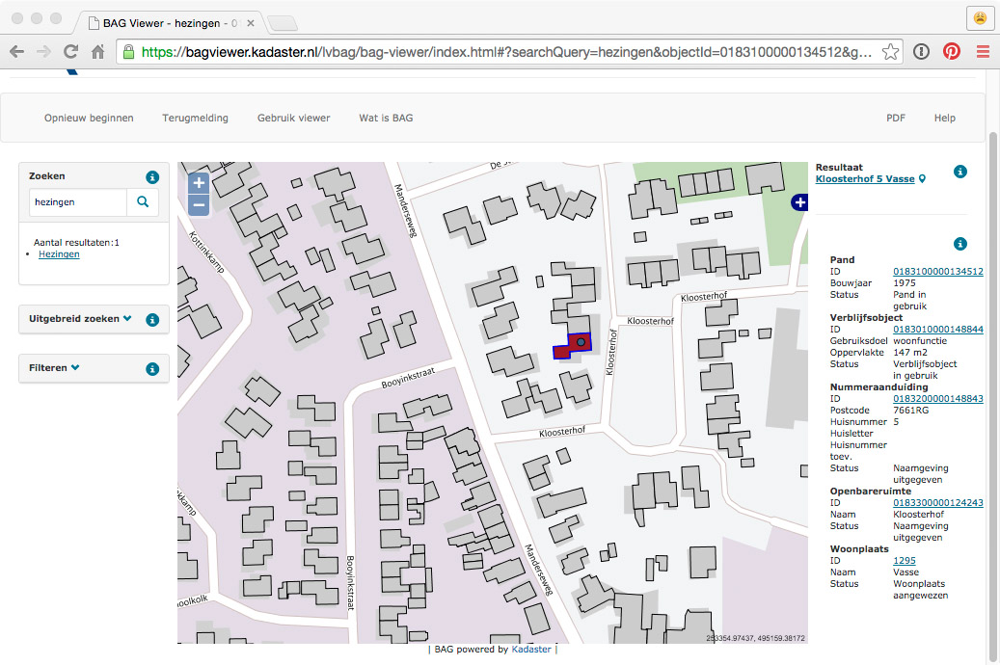
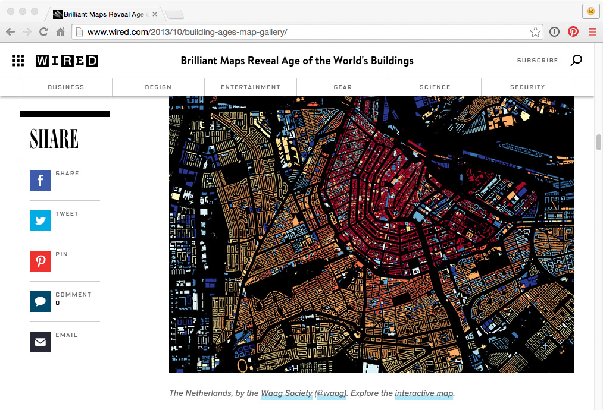
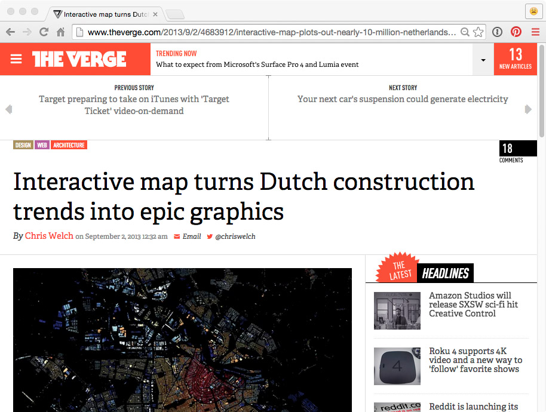
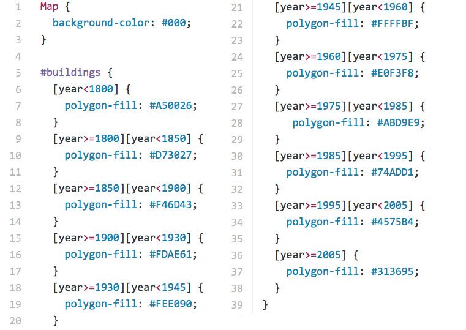
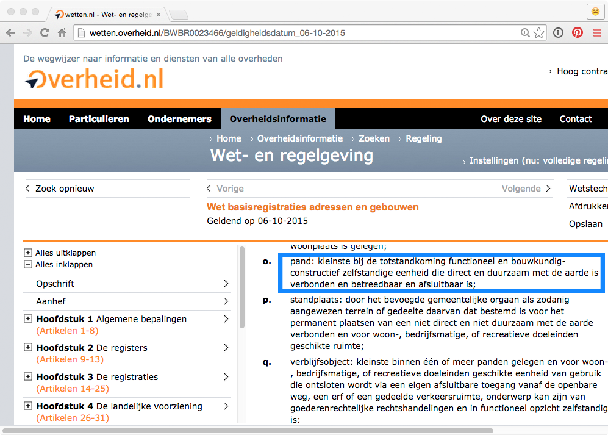
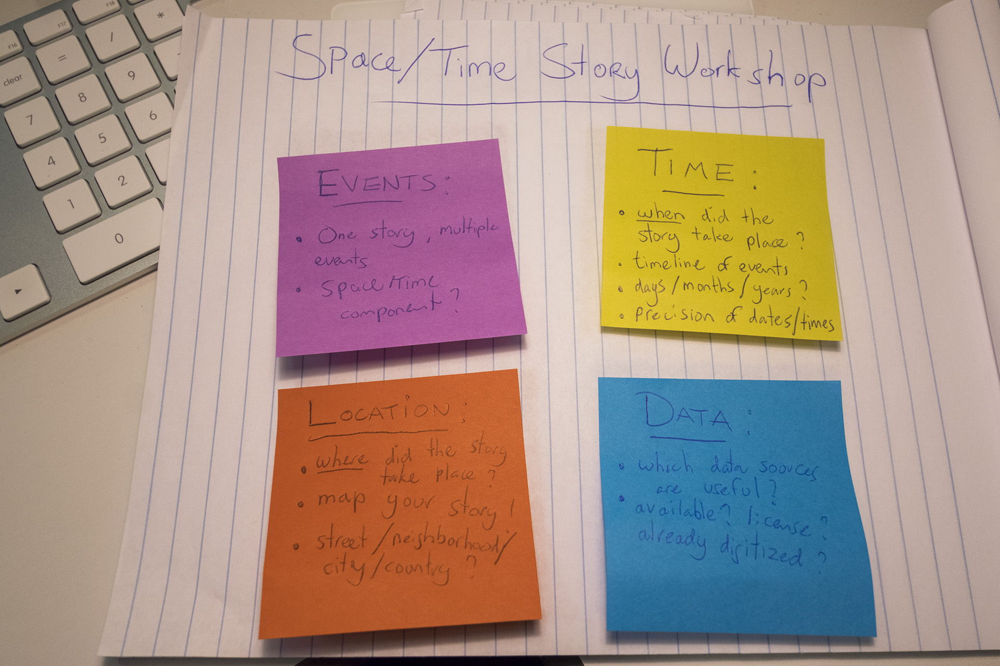
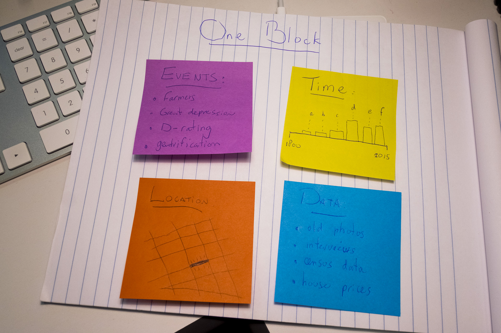

Bert Spaan — Space/Time Directory Engineer 🚀
Mapping space & time — two of my previous projects:
All addresses and buildings in the Netherlands are released as open data
BAG viewer
And for each building, this dataset contains its year of construction, too!

Haarlem
And then, this happened:
WIRED
The Verge
Great! But my map was pretty easy to make:
CartoCSS
Hard work is done by municipality's surveyors and GIS departments: each building in the country is mapped!
(One question remains: what exactly is a building?)
BAG
Histograph — geocoding places of the past
Tools for cultural heritage organizations in the Netherlands: libraries, archives, museums, etc.
Old names of buildings, streets, places, municipalities
Workshop: Space/Time Stories
Workshop
Workshop